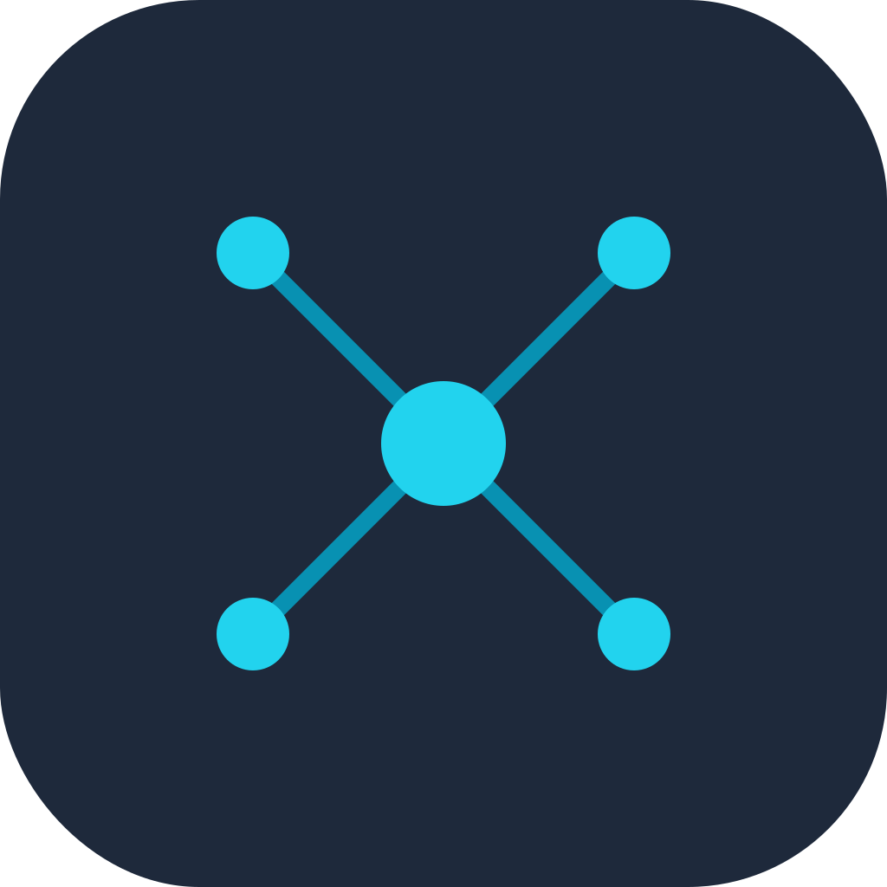

1AIVault Sync
idle
Choose what to sync
Nothing is fetched until you pick. Pick a single service to keep the fetch tight.
Claude.ai
Projects + conversations
ChatGPT
Recent conversations
Both
Discover Claude.ai and ChatGPT
Scanning your AI accounts…
Reading the conversation lists. No transcripts are fetched yet.
Projects
Entries
All entries
New + updated
New only
Updated only
Imported
Newest first
Oldest first
Title A-Z
Project A-Z
Status
Service
Select visible
Clear visible
Select new
Select updated
Query new only
—
Start import →
Claude.ai
idle
—
0
imported
0
skipped
0
errors
ChatGPT
idle
—
0
imported
0
skipped
0
errors
Activity log
Auto-scroll